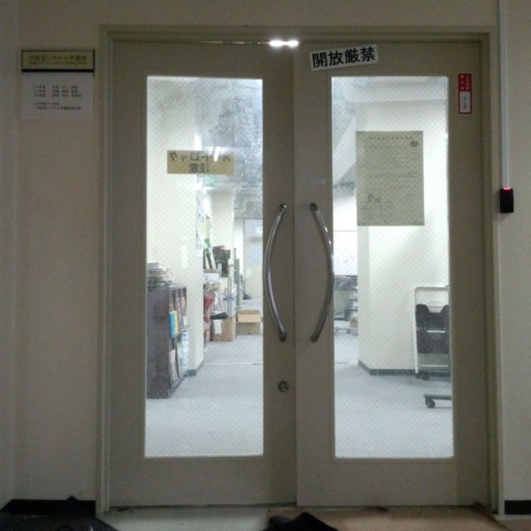
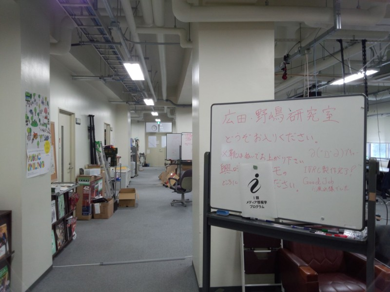
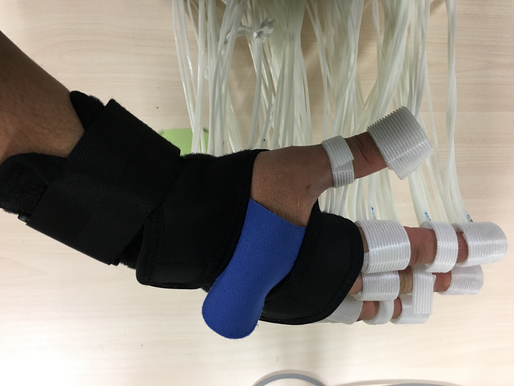
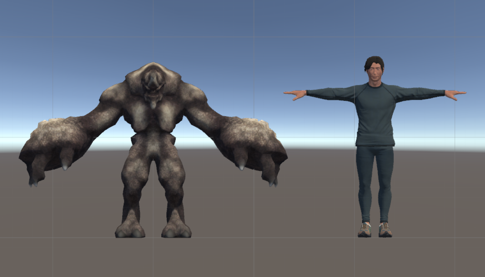
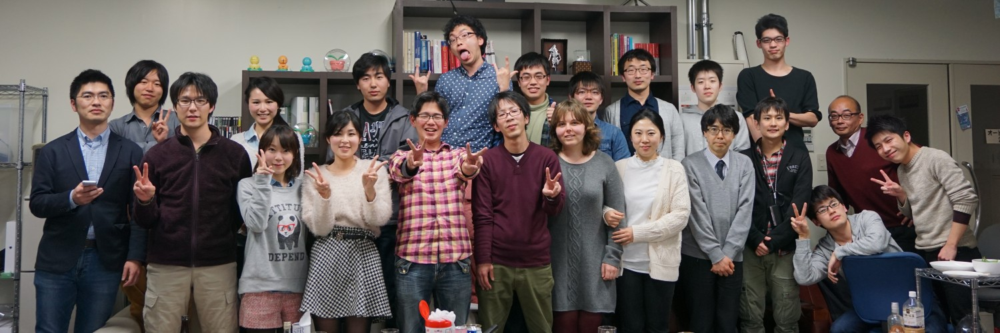
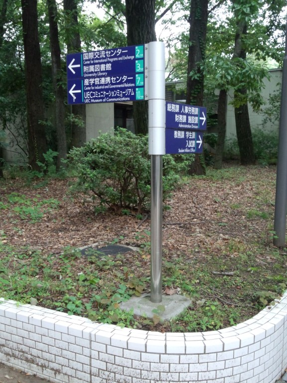
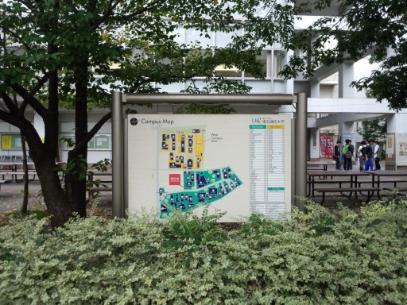
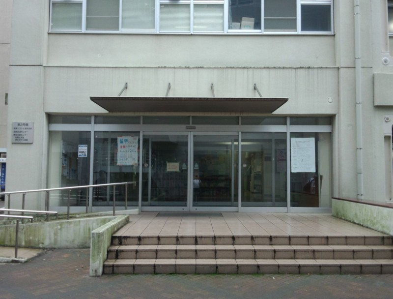

Introduction 紹介
メッセージ
VR環境での操作、触力覚提示のデバイスとアルゴリズム、五感情報通信などの研究をしています。研究室では、学生さんと対等に議論できる環境や雰囲気を大切にしています。
研究室は野嶋研究室と一緒に運営しています。認知心理学の分野で活躍されている櫻井翔先生に特任助教として指導に加わっていただいています。
また、CGとARの分野で業績をお持ちの栗原恒弥先生に客員教員として研究指導に携わっていただいています。両先生の研究テーマを志望する学生も受け入れます。
研究室は野嶋研究室と一緒に運営しています。認知心理学の分野で活躍されている櫻井翔先生に特任助教として指導に加わっていただいています。
また、CGとARの分野で業績をお持ちの栗原恒弥先生に客員教員として研究指導に携わっていただいています。両先生の研究テーマを志望する学生も受け入れます。
学生募集
インタラクションの探究に熱意のある人募集中！大学院からの入学も歓迎します。
研究室の見学などの希望があれば広田宛連絡ください。
研究室の見学などの希望があれば広田宛連絡ください。
オープンキャンパス
2021年7月18日（日）13:00-17:00
オンラインで開催します。詳細はこちら。
オンラインで開催します。詳細はこちら。


Research 研究
＜クリックして詳細へ＞
研究領域
-
VR手モデルと操作
手を使ったVR環境とのインタラクションの実現に関する研究です。 現実と同様な器用な操作や動作スキルの活用を目指しています。...
-
手の触覚提示
触覚提示の研究です。人と環境とのインタラクションでは多くの場合手が使用されます。 したがって手に対して現実感の高い触覚を提示する手法の開発が重要な課題になっています。...
-
VR物体モデル
VR環境で現実と同様の作業をするためにはVR物体も現実と同様に振る舞わなければなりません。 とくに操作に伴って変形する物体の表現はモデル化や実時間計算に課題が残っています。...
-
身体感覚と自己認識
VR環境ではユーザ自身の身体はアバタとして表現されますが、アバタは一般にはユーザの 身体的特徴を反映していません。この問題は認識や動作に影響しないのでしょうか。...
-
感情と情動
様々な感覚情報の提示によって現実感を与えることができるようになってきました。 このような感覚情報提示を利用して感情や情動を生起させることはできないでしょうか。...
-
歩行間隔
VR環境で歩いている感覚を生成する研究です。実際に歩く動作をするのではなく、 主に受動的な刺激によってあたかも自発的に歩く感覚を与えることを目指しています。...
-
触覚インターフェース
触覚を通して情報を伝える研究です。たとえば、箱を振ってみると中身の性質や およその量がわかります。触覚的な手がかりを日常生活に生かすことを考えます。...
-
その他
以上に分類されない研究も色々進めています。VR技術をベースにした 応用研究も興味の範囲です。...
最近元気なプロジェクト
-
指先に高密度な刺激を提示する圧覚ディスプレイ
指に高密度な触覚刺激を提示するデバイスを開発しています。...
-
VRツイスター
VR環境でツイスターゲームをやります。...
-
融合身体VR
1つのアバタを複数人で操作した際のユーザに対する影響や、活用先についての研究です。...


Member 構成員

野嶋研のメンバーとともに（2015年4月）
スタッフ
在学生
修士2年
岡 時生
奥田 健嗣
島田 佳毅
田中 徳彦
德久 龍之介
修士1年
篠崎 佑樹
木村 信人
後藤 拓海
桑 雨川
(SANG YUCHUAN)
山田 祐輔
学部4年
飯泉 謙人
沖田 知泰
木村 洸太郎
竹中 祐子
研究生
梅 珈康
(MEI JIAKANG)
Fabian Schneekloh
(JUSST student)
卒業生
2021年3月（修士課程）
太田 悠介
華 青
(HUA QING)
菅本 成明
2020年9月（研究生他）
劉 師橋
(LIU SHIQIAO)
包 書慈
(PAO SHU-TZU)
2020年3月（修士課程）
谷口 登章
佐伯 宇央
2020年3月（学部）
帆山 遼
武井 友里恵
2020年3月（研究生他）
リュウラク
伊藤 拓海
2019年3月（修士課程）
長野 瑞生
2019年3月（学部）
夏目 英里
植田 滉大
2019年3月（研究生他）
Ou Jiarui
Chen Zhaoyue
小笠原 健
吉永亮 佑
2018年3月（修士課程）
田村 莞爾
日岐 桂吾
藤岡 駿介
楊 暢
2018年3月（学部）
宮脇 瞳
寺西 悠人
2017年3月（修士課程）
梅田 翔太
岡野 哲大
筒井 悠平
2017年3月（学部）
町屋 航星
Lecture 講義
大学院
対話型システム特論/対話型システム論1
講義資料などはwebclassで配布します。シラバスを確認してください。
学部
基礎科学実験A
「光のスペクトル」の検算ツールは...
こちら
その他
ありません
Access 所在地
研究室
東2号館311号室（教員室）・317号室（研究室）
交通と学内マップは... こちら
交通と学内マップは... こちら
連絡先
メール
hirota（あっと）vogue.is.uec.ac.jp
郵便
〒182-8585 東京都 調布市 調布ヶ丘 1-5-1
電気通信大学 大学院情報理工学研究科 情報学専攻 広田 宛
電気通信大学 大学院情報理工学研究科 情報学専攻 広田 宛
宅急便
〒182-0021 東京都 調布市 調布ヶ丘 1-5-1
電気通信大学 東2号館311号室 広田研究室 宛
電気通信大学 東2号館311号室 広田研究室 宛



Link リンク
Recruit 募集
研究室を志望する皆さんへ
ご興味をもっていただき有難うございます。 修士課程や博士課程からの進学も歓迎します。 研究内容や研究室での生活について知りたい方は ぜひ研究室公開にご来訪ください。
研究室について
研究テーマ
研究テーマは学生さんの興味を重視しつつ学問的・社会的な意義などを 考えて相談して決めています。これまでのテーマを研究のページに紹介しているので参考にしてください。過去のテーマ（終了年が 書かれているテーマ）でも、興味があれば続きを考えます。
大学院入試について
大学院入試（一般・社会人）で当研究室を志望される場合は、 出願される前に面談（ビデオ会議も可）をさせていただきます。 志望に関するアンケートの回答を添えてメールでご連絡ください。
その他
よくきかれる質問について簡単にまとめてみました。研究室Q&A
コロナウィルス感染症への対応
今年度も研究室訪問は受け付けることが難しい状況です。
研究室の紹介・質疑・面談などはオンラインで行います。
研究室の紹介・質疑・面談などはオンラインで行います。
研究室公開
オープンキャンパス
2021年11月21日（日）13:30-17:00
研究室公開をします。SpatialChatというコミュニケーションツールをつかいます。以下にアクセスしてください。
SpatialChatURL: https://spatial.chat/s/hironoji-openlab-1121 開催時間以外は入室制限がかかっています。アカウントの作成は不要です。 研究を進めている学生さんの率直な声を聞くことができます。
研究室公開をします。SpatialChatというコミュニケーションツールをつかいます。以下にアクセスしてください。
SpatialChatURL: https://spatial.chat/s/hironoji-openlab-1121 開催時間以外は入室制限がかかっています。アカウントの作成は不要です。 研究を進めている学生さんの率直な声を聞くことができます。